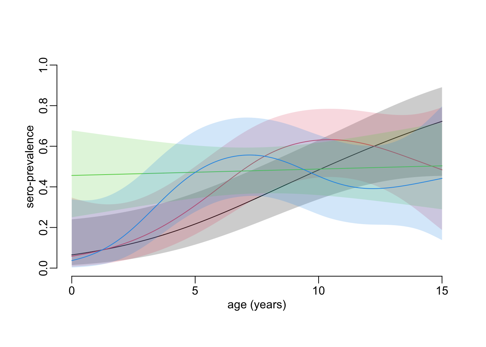
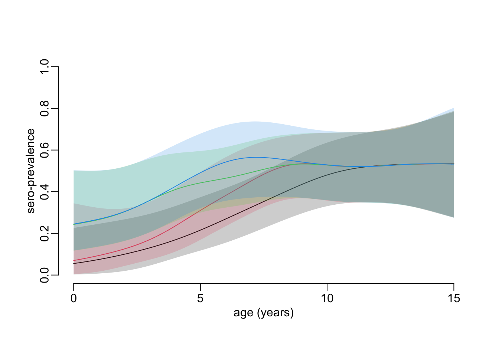

path2data <- "/Users/MarcChoisy/Library/CloudStorage/OneDrive-OxfordUniversityClinicalResearchUnit/GitHub/choisy/hfmd/"
data_file <- paste0(path2data, "hfmd_sero.rds")2023 HCMC HMFD outbreak
1 Global parameters
The path to the data file:
2 Packages
Required packages:
required_packages <- c("dplyr", "stringr", "purrr", "tidyr", "magrittr", "mgcv",
"scam")Installing those that are not installed:
to_inst <- required_packages[! required_packages %in% installed.packages()[,"Package"]]
if (length(to_inst)) install.packages(to_inst)Loading the packages:
library(dplyr)
library(stringr)
library(purrr)
library(tidyr)
library(magrittr)
library(mgcv)
library(scam)3 Utilitary functions
A tuning of the predict() generic:
predict2 <- function(...) predict(..., type = "response") |> as.vector()4 Loading the data
Loading, cleaning and putting the data in shape:
hfmd <- data_file |>
readRDS() |>
as_tibble() |>
mutate(collection = id |>
str_remove(".*-") |>
as.numeric() |>
divide_by(1e4) |>
round(),
col_date2 = as.numeric(col_date),
across(pos, ~ .x > 0))5 Temporally independent age profiles
A function that computes a sero-prevalence age profile with confidence interval for a given collection:
age_profile <- function(data, age_values = seq(0, 15, le = 512), ci = .95) {
model <- gam(pos ~ s(age), binomial, data)
link_inv <- family(model)$linkinv
df <- nrow(data) - length(coef(model))
p <- (1 - ci) / 2
model |>
predict(list(age = age_values), se.fit = TRUE) %>%
c(list(age = age_values), .) |>
as_tibble() |>
mutate(lwr = link_inv(fit + qt( p, df) * se.fit),
upr = link_inv(fit + qt(1 - p, df) * se.fit),
fit = link_inv(fit)) |>
select(- se.fit)
}A function that computes a sero-prevalence age profile with confidence interval for each of the collections of a dataset:
age_profile_unconstrained <- function(data, age_values = seq(0, 15, le = 512),
ci = .95) {
data |>
group_by(collection) |>
group_map(~ age_profile(.x, age_values, ci))
}A function that plots the sero-prevalence profiles with confidence intervals of all the collections:
plot_profiles <- function(x, colors = 1:4, alpha = .2) {
plot(NA, xlim = c(0, 15), ylim = 0:1, xlab = "age (years)", ylab = "sero-prevalence")
walk2(x, colors, ~ with(.x,
{
polygon(c(age, rev(age)), c(lwr, rev(upr)), border = NA,
col = adjustcolor(.y, alpha))
lines(age, fit, col = .y)
}))
}Computing the sero-prevalence age profiles for all the collections:
unconstrained_age_profiles <- age_profile_unconstrained(hfmd)Plotting the sero-prevalence age profiles for all the collections:
plot_profiles(unconstrained_age_profiles)
6 Temporally linked age profiles
6.1 Overview
Ideally we would like to be able to fit a binomial GAM as a function of both age and time, without any constraint on age, but imposing a monotonic increase as a function of time. Since this is not possible at the moment with the tools currently available, we propose a solution in 2 successive steps that we would ideally like them to be as so:
- Step 1: fitting an unconstrained binomial GAM to seropositivity as a function of age for each time point.
- Step 2: fitting a monotonically increasing beta GAM to the predictions of the unconstrained binomial GAM as a function of time for each age value.
Since there is currently no tool available that allows to fit a constrained beta GAM, we have to decompose the second step into 2 steps which consist in:
- Step 2a: converting proportions predicted by the unconstrained binomial GAM into Bernoulli realizations on which to fit a monotonically increasing binomial GAM as a function of time for each age value from which to generate predictions with confidence interval.
- Step 2b: smoothing out the stochasticity introduced by the conversion of the proportions into Bernoulli realizations by fitting unconstrained beta GAMs to the predictions and confidence interval bounds of the constrained binomial GAM as functions of age for each time point.
6.2 Algorithm
- Step 1 (age profile): for each time point (i.e. samples collection):
- fit an unconstrained binomial GAM to seropositivity as a function of age
- convert population seroprevalence into individual seropositivity realizations: for each value of a large vector of age values:
- generate the prediction + confidence interval
- from each of the rate values of the prediction and confidence interaval lower and upper bounds, generate random realizations of a Bernoulli process to convert population seroprevalence into individual seropositivity
- Step 2a (epidemiological time): for each value of age:
- fit a monotonically increasing binomial GAM to the Bernoulli realizations as a function of time
- for each time point: generate the prediction + confidence interval
- Step 2b (smoothing out the stochasticity introduced by the seroprevalence to seropositivity conversion): for each time point fit an unconstrained beta GAMs to the predictions and confidence interval bounds of step 2a as a function of age
6.3 Implementation
A function that computes a sero-prevalence age profile with confidence interval for each of the collections of a dataset, with a temporal constraint between the collections:
age_profile_constrained <- function(data, age_values = seq(0, 15, le = 512), ci = .95,
n = 100) {
mean_collection_times <- data |>
group_by(collection) |>
summarise(mean_col_date = mean(col_date2)) |>
with(setNames(mean_col_date, collection))
data |>
# Step 1:
group_by(collection) |>
group_modify(~ .x |>
age_profile(age_values, ci) |>
mutate(across(c(fit, lwr, upr), ~ map(.x, ~ rbinom(n, 1, .x))))) |>
ungroup() |>
mutate(collection_time = mean_collection_times[as.character(collection)]) |>
unnest(c(fit, lwr, upr)) |>
pivot_longer(c(fit, lwr, upr), names_to = "line", values_to = "seropositvty") |>
# Step 2a:
group_by(age, line) |>
group_modify(~ .x %>%
scam(seropositvty ~ s(collection_time, bs = "mpi"), binomial, .) |>
predict2(list(collection_time = mean_collection_times)) %>%
tibble(collection_time = mean_collection_times,
seroprevalence = .)) |>
ungroup() |>
# Step 2b:
group_by(collection_time, line) |>
group_modify(~ .x |>
mutate(across(seroprevalence, ~ gam(.x ~ s(age), betar) |>
predict2()))) |>
ungroup() |>
pivot_wider(names_from = line, values_from = seroprevalence) |>
group_by(collection_time) |>
group_split()
}Computing a sero-prevalence age profile with confidence interval for each of the collections, with a temporal constraint between the collections(takes 1’20”):
constrained_age_profiles <- age_profile_constrained(hfmd)Plotting the sero-prevalence age profiles with temporal constraint between collections:
plot_profiles(constrained_age_profiles)